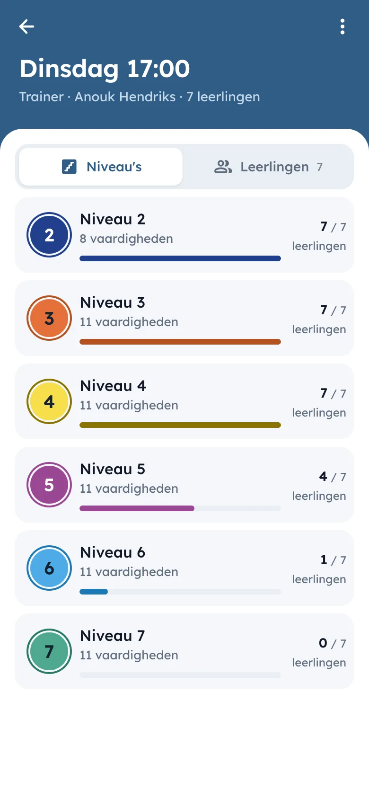

Tijdens de les
Beoordelen in één tik
Op de training heb je geen tijd voor formulieren. Je kiest een vaardigheid, ziet je hele groep onder elkaar en tikt per leerling onvoldoende, neutraal of goed aan. Het wordt meteen opgeslagen. Tik je mis, dan zet je het met de melding onderaan direct terug.
Wil je liever één leerling helemaal doorlopen, bijvoorbeeld aan het eind van het seizoen, dan zie je alle vaardigheden van zijn of haar niveau bij elkaar.
Stride werkt gewoon in de browser van je telefoon, dus er hoeft niets geïnstalleerd te worden. De knoppen zijn groot genoeg om met één hand te bedienen, langs de kant of aan de badrand, en de tekst blijft leesbaar in fel licht.


Niveaus en voortgang
De voortgang hoort bij de leerling
Elke club bepaalt zelf welke niveaus en vaardigheden er zijn, en wanneer een niveau als behaald telt. Stride houdt de beoordelingen bij en laat zien wie een niveau heeft afgerond. Hoort er een diploma, bandje of insigne bij, dan leg je ook vast wanneer dat is uitgereikt.
Leerlingen wisselen nog weleens van groep of trainer. Hun beoordelingen gaan dan gewoon mee: wat een leerling kan, hoort bij de leerling en niet bij de groep.
Trainers loggen in met hun e-mailadres en een code, zonder wachtwoord. Beheerders nodigen trainers uit en bepalen wie groepen en leden mag aanpassen, en wie behaalde niveaus en uitreikingen beheert. Zo werkt inloggen.


In gebruik
Ontstaan op het ijs
DIJC
Kunstschaatsen
Stride is ontstaan bij kunstschaatsclub DIJC, waar de trainers er elke week hun lessen in bijhouden, bij hen onder de naam IJsvrij. Elke club krijgt een eigen adres en naam, en zet er zijn eigen niveaus en vaardigheden in. Zo past Stride bij elke sport die met niveaus werkt, van zwemles tot turnen of judo.
Past Stride bij jouw club?
Stuur ons een mail over je club en hoe jullie nu met niveaus werken. We laten je graag zien hoe Stride eruitziet.
Mail ons